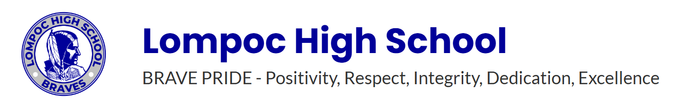

New Mexico State University
Master's degree, Computer Science
May 2025 - May 2027
This is the central departure point for the course sites. We will grow from here.
I work at the intersection of data, systems, and communication. My strongest technical skills include SQL, Python, data analytics, information systems design, and web development with HTML, CSS, and JavaScript. I am proficient at an expert level with Tableau and Spotfire applications for analytics, reporting, and decision-support visualization. I also bring practical experience in project execution, process improvement, and AI-assisted workflows that accelerate delivery while keeping quality standards high.
This combination of applied technical work and continuous learning has shaped a broad, layered academic path. The education background below shows how these skills were built over time across computer science, information science, business analytics, and interdisciplinary studies.
Academic background spanning computer science, information systems, analytics, and interdisciplinary liberal arts studies.
Master's degree, Computer Science
May 2025 - May 2027

Master's degree, Information Science/Studies
Aug 2023 - May 2026
Grad Certificate, Data Visualization for Business Analytics (online)
Jan 2022 - May 2024
Certificate of Completion, Computer Programming (Python, HTML, CSS, JavaScript)
Dec 2022 - Dec 2023
B.B.A., Business Information Systems (Data Analytics)
Jan 2021 - May 2023
Certificate of Completion, One-year prep for BYU admission
Feb 2022 - Dec 2022
B.A., Multi/Interdisciplinary Studies
2021 - 2022

Certificate, Data Analyst I (Information Technology)
Aug 2018 - Dec 2020
A.S., Information Technology
2019 - 2020

A.A.T., History
2018 - 2019
A.S., Business/Office Automation/Technology/Data Entry
2017 - 2019
Certificate, Office Clerk
2017 - 2019
Certificate, Business Office Technology
2017 - 2019
Certificate, Administrative Office Assistant
2017 - 2019
A.A., Liberal Arts and Sciences/Liberal Studies
2016 - 2017
A.A., Economics
2016 - 2017
A.A., English Language and Literature/Letters
2009 - 2015

Completed course, Geology Petroleum Exploration in Marcellus Shale
Summer 2014

B.A., Psychology
Jan 2005 - Jun 2009
B.A., Religious Studies
Graduated May 2009
A.S.T., Transfer Studies
2004 - 2005
A.A., Psychology
2000 - 2004

High School Diploma
Graduated May 1996